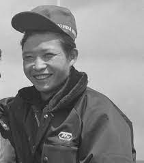

История дрифта началась в 70-е годы прошлого столетия. Именно тогда на горных дорогах Японии молодые гонщики стали осваивать новый способ прохождения крутых поворотов с минимальной потерей скорости и крутящего момента. Основателем этой техники стал мотогонщик Кунимицу Такахаси

Изначально дрифт как спорт появился в Японии. Так как дрифтинг начал развитие сразу в нескольких городах Японии, то точное место его рождения определить нельзя. В истории происхождения дрифта известны такие горные перевалы, как Ирохазака, Роккосан, Хаконе и все возможные холмистые дороги в Нагано.
Больше информации по ссылке (нажмите чтобы перейти)